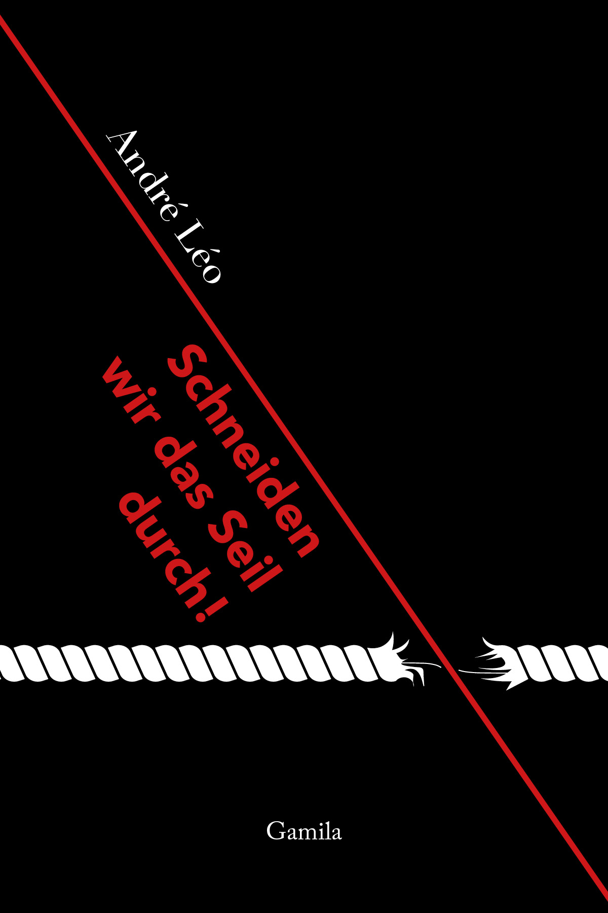

André Léo
Schneiden wir das Seil durch!
"It is high time to fulfill Voltaire's wish: Let us crush the vile! It is high time to liberate life from the exploiters of death - to redeem man from slavery and obscurantism, the living from the primitive mummy! An end to barbarism! - Into the new era!"
What André Léo called for back in 1901 still applies today. The writer and activist, who was previously unknown in the German-speaking world, not only addressed the emancipation of women and decent working conditions, but also the separation of church and state. She considered it long overdue to cut the cord between these two institutions.